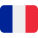

<mat-toolbar>
  <!-- bouton hamburger et logo du site  -->
  <div class="menu">
    <button mat-icon-button (click)="toggleSidenav()">
      <mat-icon>{{ isSidenavOpen ? "menu" : "menu" }}</mat-icon>
    </button>
    <span>Get</span>
    <span>smarter</span>
  </div>

  <div class="user">
    <!-- debut selecteur de langue  -->
    <div class="select-menu" [class.active]="isActive">
      <div class="select-btn" (click)="toggleMenu()">
        <span class="sBtn-text">{{ selectedCountry.toUpperCase() }}</span>
        <i class="fas fa-angle-down"></i>
      </div>

      <ul class="options">
        <li class="option" (click)="selectOption($event, 'fr')">
          
          <span class="option-text">FR</span>
        </li>
        <li class="option" (click)="selectOption($event, 'en')">
          
          <span class="option-text">EN</span>
        </li>
      </ul>
    </div>
    <!-- fin du selecteur de langue  -->

    <!-- icone de notification  -->
    <button mat-icon-button>
      <mat-icon matTooltip="Notifications">notifications</mat-icon>
    </button>

    <!-- image du profil  -->

    <div class="profil" (click)="toggleModal($event)">
      <div class="image">
        
      </div>

      <ul
        class="list"
        [ngClass]="{ show: isModalVisible }"
        (click)="$event.stopPropagation()"
      >
        <li (click)="onOptionSelected($event)">
          <a routerLink="/profil"
            ><mat-icon>person</mat-icon><span>Profil</span></a
          >
        </li>
        <li (click)="onOptionSelected($event)">
          <a routerLink="/profil"
            ><mat-icon>settings</mat-icon><span>Paramètres</span></a
          >
        </li>
        <button (click)="onOptionSelected($event)">
          <mat-icon>logout</mat-icon><span>Deconnexion</span>
        </button>
      </ul>
    </div>
  </div>
</mat-toolbar>

<!-- debut de la sidenav  -->
<mat-sidenav-container class="sidenav-container">
  <mat-sidenav
    #sidenav
    [mode]="sidenavMode"
    [(opened)]="isSidenavOpen"
    [class.collapsed]="!isSidenavOpen && isLargeScreen"
  >
    <div class="image">
      <p class="img">
        
      </p>
      <p>Delfred Tene</p>
    </div>
    <ul class="sidenav-content">
      <a routerLink="/accueil" routerLinkActive="router-link-active"
        ><mat-icon>dashboard</mat-icon> {{ "Dashboard" | translate }}</a
      >
      <a routerLink="/session" routerLinkActive="router-link-active"
        ><mat-icon>groups</mat-icon>{{ "Session" | translate }}</a
      >
      <a routerLink="/etudiant" routerLinkActive="router-link-active"
        ><mat-icon>face</mat-icon>{{ "Etudiant" | translate }}</a
      >
      <a routerLink="/formations" routerLinkActive="router-link-active"
        ><mat-icon>school</mat-icon>{{ "Formations" | translate }}</a
      >
      <a routerLink="/campus" routerLinkActive="router-link-active"
        ><mat-icon>apartment</mat-icon>{{ "Campus" | translate }}</a
      >
      <a routerLink="/paiement" routerLinkActive="router-link-active"
        ><mat-icon>payments</mat-icon>{{ "Paiement" | translate }}</a
      >
      <a routerLink="/matiere" routerLinkActive="router-link-active"
        ><mat-icon>book</mat-icon>{{ "Matière" | translate }}</a
      >
      <a routerLink="/demarrer-matiere" routerLinkActive="router-link-active"
        ><mat-icon>play_lesson</mat-icon>{{ "Demarrer matière" | translate }}</a
      >
      <a routerLink="/professeur" routerLinkActive="router-link-active"
        ><mat-icon>person_3</mat-icon>{{ "Professeur" | translate }}</a
      >
      <a routerLink="/tuteur" routerLinkActive="router-link-active"
        ><mat-icon>supervisor_account</mat-icon>{{ "Tuteur" | translate }}</a
      >
      <a routerLink="/statistique" routerLinkActive="router-link-active"
        ><mat-icon>bar_chart_4_bars</mat-icon
        >{{ "Statistiques" | translate }}</a
      >
      <a routerLink="/liste-utilisateurs" routerLinkActive="router-link-active"
        ><mat-icon>group</mat-icon>{{ "Liste d'utilisateurs" | translate }}</a
      >
      <div class="list">
        <input type="checkbox" id="dropdown" />
        <label for="dropdown">
          <span><mat-icon>settings</mat-icon> Test</span
          ><span><mat-icon>chevron_right</mat-icon></span>
        </label>
        <ul>
          <li>
            <a routerLink="/1" routerLinkActive="router-link-active">Test 1</a>
          </li>
          <li>
            <a routerLink="/2" routerLinkActive="router-link-active">Test 2</a>
          </li>
          <li>
            <a routerLink="/3" routerLinkActive="router-link-active">Test 3</a>
          </li>
          <li>
            <a routerLink="/4" routerLinkActive="router-link-active">Test 4</a>
          </li>
        </ul>
      </div>
    </ul>
  </mat-sidenav>

  <!-- contenu du site  -->
  <mat-sidenav-content class="main-content">
    <router-outlet></router-outlet>
  </mat-sidenav-content>
</mat-sidenav-container>
